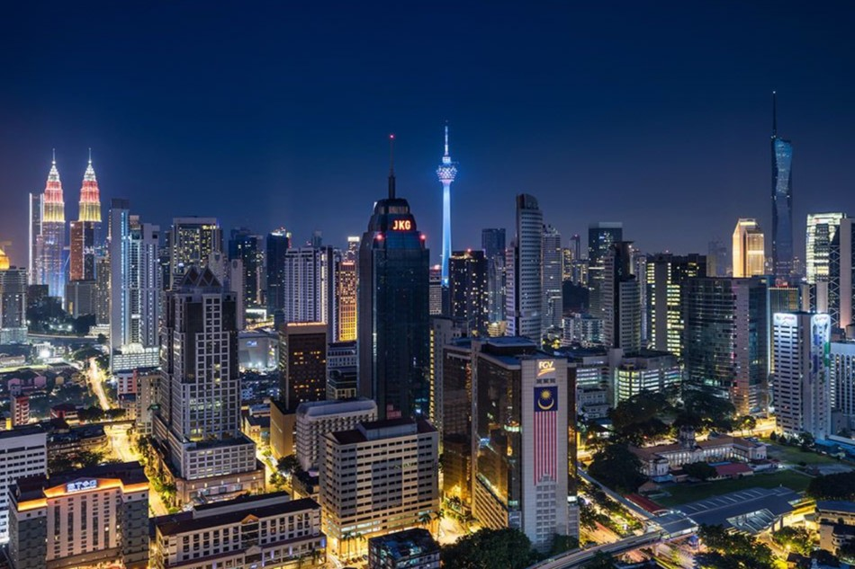

Kuala Lumpur, Malaysia
I grew up in Kuala Lumpur, a lively city known for great food, accessibility and vibrant communities. Modern conveniences and a multicultural vibe make it a welcoming place to live.
What I like
- Delicious food, especially Chinese cuisine.
- Plenty of shopping and entertainment options.
- Friendly people and strong community spirit.
Top 3 Favorite Places in KL
- Petronas Twin Towers - Iconic landmark and shopping center
- Batu Caves - Beautiful Hindu temple with colorful stairs
- Central Market - Traditional Malaysian arts and crafts